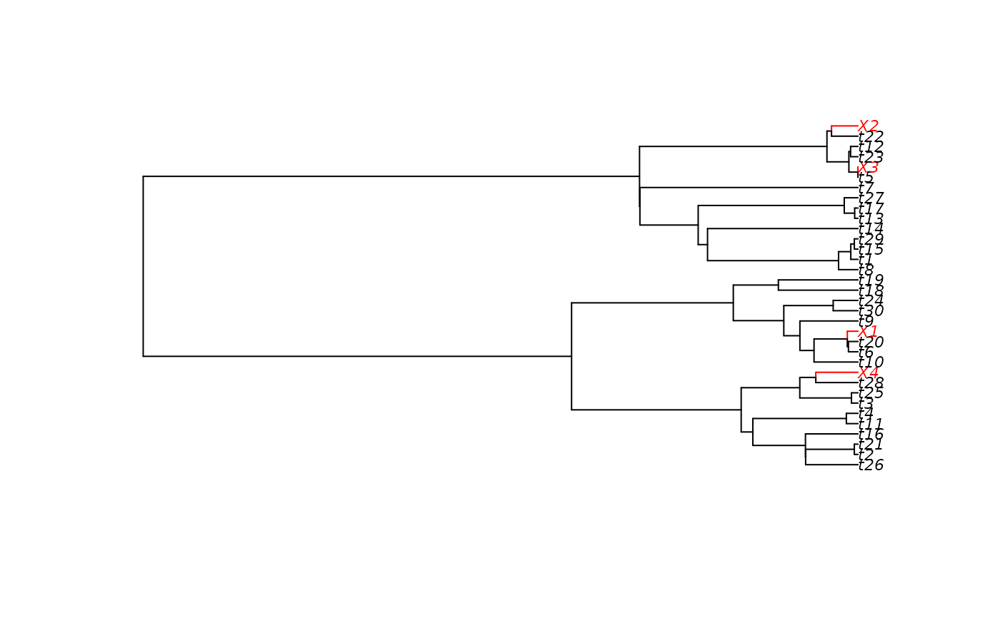
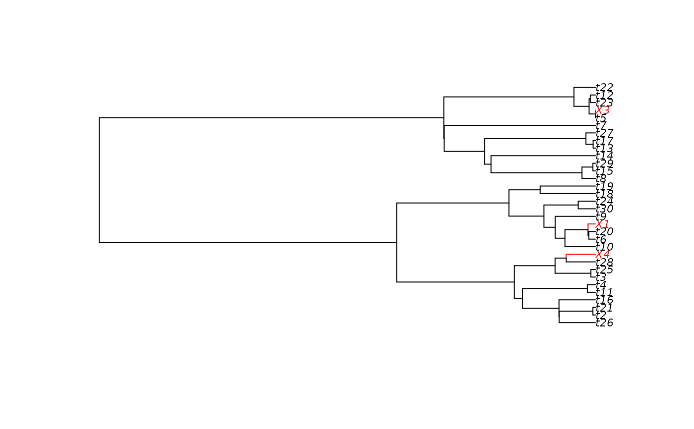

Identify the grafted tips and branches of a phylogeny
Source:R/identify_grafted.R
identify_grafted.RdIdentify which tips and which branches of a phylogeny are grafted, as opposed to backbone.
The information is added to the phylogeny as two elements, grafted_tips and grafted_edges, which can be used to color the phylogeny on plots (see examples).
The function is also useful to update these elements after the phylogeny has been manipulated
(e.g., with ape::drop.tip(), which does not update the elements of the phylogeny it does not know).
Arguments
- phy
An object of class
"phylo". The phylogeny, including the grafted taxa. It can also be a set of phylogenies (class"multiPhylo", e.g., the output of the grafting functions withnb_simulations > 1), or a list of them with one element per stochastic map (output of the grafting functions with a"multiSimmap"): the elements are then added to each phylogeny.- grafted_taxa
Character vector. Labels of the grafted taxa (e.g.,
missing_taxa_list$Taxon_name). Labels that are not tips ofphyare ignored, with a warning.
Value
The phylogeny phy (class "phylo"), with two elements added, or replaced if phy already had them (for a "multiPhylo" or a list of maps: the same object,
with each phylogeny updated:
grafted_tipsNamed logical vector with one value per tip ofphy, in the order ofphy$tip.label.TRUEfor grafted tips. Names are the tip labels.grafted_edgesNamed logical vector with one value per branch (edge) ofphy, in the order of the rows ofphy$edge.TRUEfor grafted branches. Names are the IDs of the tipward nodes of the branches (i.e.,phy$edge[, 2]).
Details
A tip is grafted if its label is in grafted_taxa.
A branch is grafted if all the tips descending from it are grafted taxa (this includes the terminal branches of grafted taxa, and the internal branches of clades made only of grafted taxa).
A branch with at least one backbone tip below it is a backbone branch, even if a grafted taxon was added on it (the backbone branch is then split in two pieces, which are both backbone branches).
Node IDs are renumbered by functions that remove tips, such as ape::drop.tip():
use this function again to update the grafted_tips and grafted_edges elements in that case.
See also
Other functions from phylograftR:
phylograftR::graft_missing_taxa()to graft taxa based on target clades and excluded subclades.phylograftR::graft_missing_clades()to graft groups of missing taxa as sister clades of backbone clades.phylograftR::graft_missing_taxa_and_clades()to graft missing taxa and missing clades in one run, with a single set of inputs.phylograftR::extract_grafting_info()to extract a posteriori information on the location of grafted lineages.phylograftR::plot_grafted()to plot grafted phylogenies with grafted lineages identified.
Examples
# --- Prepare data --- #
# Create a toy backbone phylogeny, and graft taxa
set.seed(1234)
phy <- ape::rcoal(n = 30)
phy$edge.length <- phy$edge.length / max(ape::node.depth.edgelength(phy)) * 50
missing_taxa_list <- list(
Taxon_name = c("X1", "X2", "X3", "X4"),
Target_clade = list(X1 = c("t26", "t18"), X2 = c("t8", "t22"), X3 = "t5", X4 = c("t26", "t18")))
# --- Perform grafting --- #
grafted_phy <- graft_missing_taxa(phy = phy, missing_taxa_list = missing_taxa_list,
verbose = FALSE, seed = 1234)
# --- Identify the grafted tips and branches --- #
# The function returns the phylogeny with two additional elements
grafted_phy <- identify_grafted(phy = grafted_phy, grafted_taxa = missing_taxa_list$Taxon_name)
table(grafted_phy$grafted_tips)
#>
#> FALSE TRUE
#> 30 4
table(grafted_phy$grafted_edges)
#>
#> FALSE TRUE
#> 62 4
# Color the grafted tips and branches in red
plot(grafted_phy, cex = 0.7,
edge.color = c("black", "red")[grafted_phy$grafted_edges + 1],
tip.color = c("black", "red")[grafted_phy$grafted_tips + 1])

# --- Update the grafted tips and branches on a pruned phylogeny --- #
# Prune the phylogeny: drop a grafted tip and a backbone tip
pruned_phy <- ape::drop.tip(phy = grafted_phy, tip = c("X2", "t1"))
# The elements 'grafted_tips' and 'grafted_edges' are NOT updated by ape::drop.tip():
# they still have their previous lengths, and are not valid anymore
length(pruned_phy$grafted_tips) == ape::Ntip(pruned_phy)
#> [1] FALSE
length(pruned_phy$grafted_edges) == nrow(pruned_phy$edge)
#> [1] FALSE
# Update them with identify_grafted(), using the grafted taxa still in the pruned phylogeny
# (grafted taxa that are not tips are ignored with a warning)
pruned_phy <- identify_grafted(
phy = pruned_phy,
grafted_taxa = intersect(missing_taxa_list$Taxon_name, pruned_phy$tip.label))
# Plot the pruned phylogeny with the updated colors
plot(pruned_phy, cex = 0.7,
edge.color = c("black", "red")[pruned_phy$grafted_edges + 1],
tip.color = c("black", "red")[pruned_phy$grafted_tips + 1])

# --- Identify the grafted tips and branches on several phylogenies --- #
# Graft multiple phylogenies at once (nb_simulations > 1)
grafted_phys <- graft_missing_taxa(phy = phy, missing_taxa_list = missing_taxa_list,
nb_simulations = 2, verbose = FALSE, seed = 1234)
# Drop a tip across all grafted phylogenies
pruned_phys <- ape::drop.tip(phy = grafted_phys, tip = "X2")
# Updated grafting information of all phylogenies at once
pruned_phys <- identify_grafted(
phy = pruned_phys,
grafted_taxa = setdiff(missing_taxa_list$Taxon_name, "X2"))
# Inspect updated information across phylogenies
sapply(pruned_phys, function (x) sum(x$grafted_tips))
#> sim_1 sim_2
#> 3 3